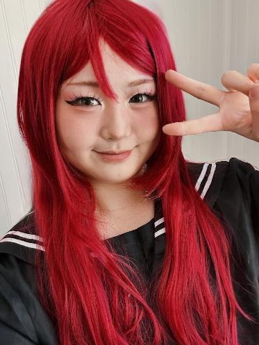

cosplay & convention photography
capture the happiness
Local shoots, convention sessions, or stage performances~ Browse the gallery below or book a shoot!
See the gallery ↓✧ favorites ✧
Take a gander...hehe...these are few of my top picks!
the gallery
Tap a filter to browse, tap a photo to zoom in.

✦Wazzupp, it's me :3
Helloooo! My name is Kaylah, also known as Juno. I am a student at the University of Tennessee Knoxville studying business! I started cosplay in June 2022, and cosplay photography in April 2024! I started out with local shoots, which are still one of my favorite types of photoshoots. Cosplay photography holds a special part in my life because it's what really brought me into the cosplay community. Before I started photography, I would just cosplay at home, or when I went to conventions I would just aimlessly wander around alone. But since I've started photography, I've been able to meet so many new friends, actually have fun at cons, and also grow my experience and skills in photography. Please feel free to contact me and chat, ask me anything, book a shoot, or give me feedback on my photos! I love to hear from people, and I am always open to constructive criticism, comments, concerns, etc etc... Hit me up!
let's shoot togetherrrrr!
Feel free to reach out to me in email or DMs — tell me your character, the con or location, your date, and any other infoo :3